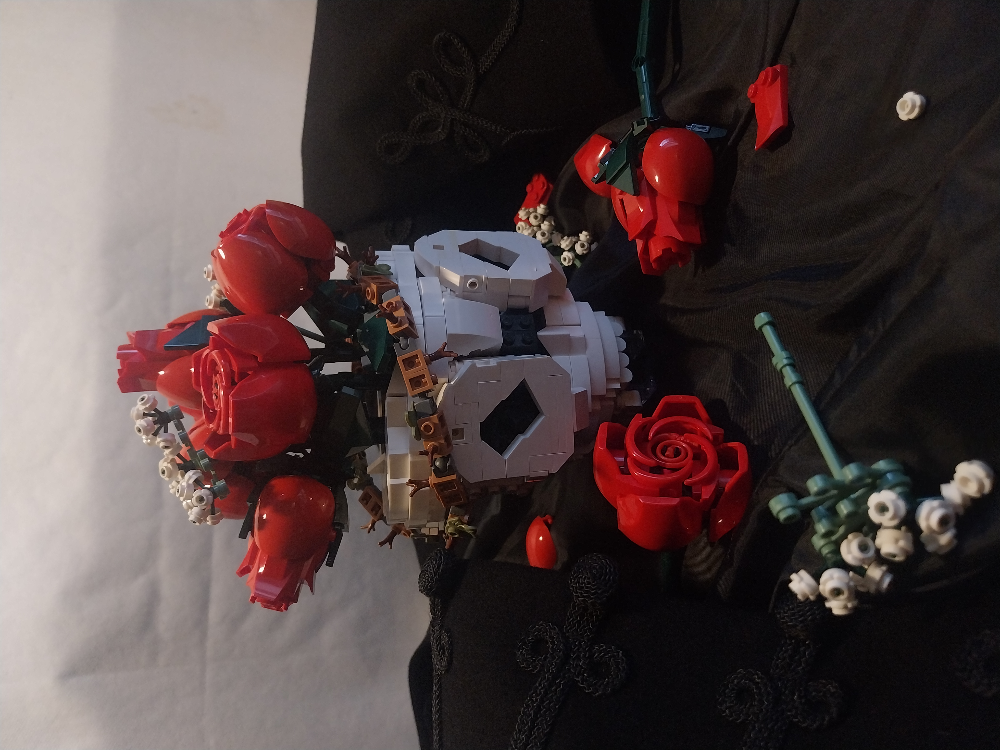
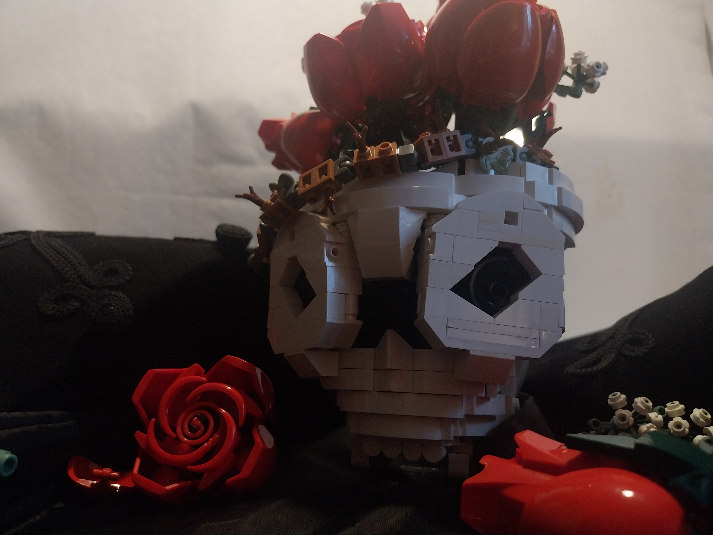

Roses potted in a skull
Lego has released a variety of flower bouquets over the last few years and the 10328 Bouquet of Roses stand out as a defining classic. They are however in great need of a vase to display them, which is a great challenge for any builder. The dark red colored roses fit well into one of my favourite aesthetic styles that is dark academia. The gothic themes might be also rooted in my Transylvanian origin, so I felt like paying a small tribute to that.


The core of this skull s a very simple 6x6x6 cube similar to the structure of a Brickheadz brain. This is then covered in intricately detailed layers of brickwork. The challenge here is not only to create an appealing look, but to also do so in a way that the structure remains sturdy. The approach this time was rather amusing. I used the white slopes and other curved parts in a way I have used them in the past for terraforming snow-covered winter landscapes. I visualized the core as an oddly perfectly cubic shaped cliff that need to be extended by a fine layer of snow, forming a white hill resembling a human skull. The chances of this anatomic formation happening in nature are extremely low, but it did happen in my hands and the results are frightening!